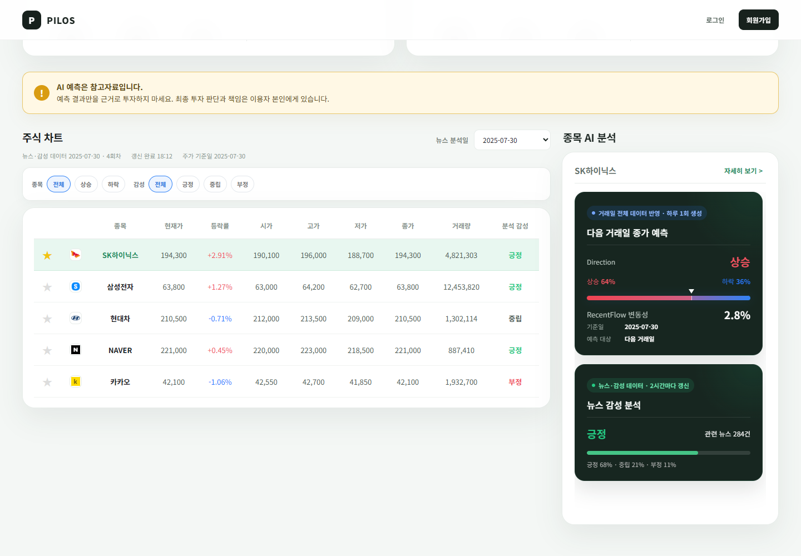
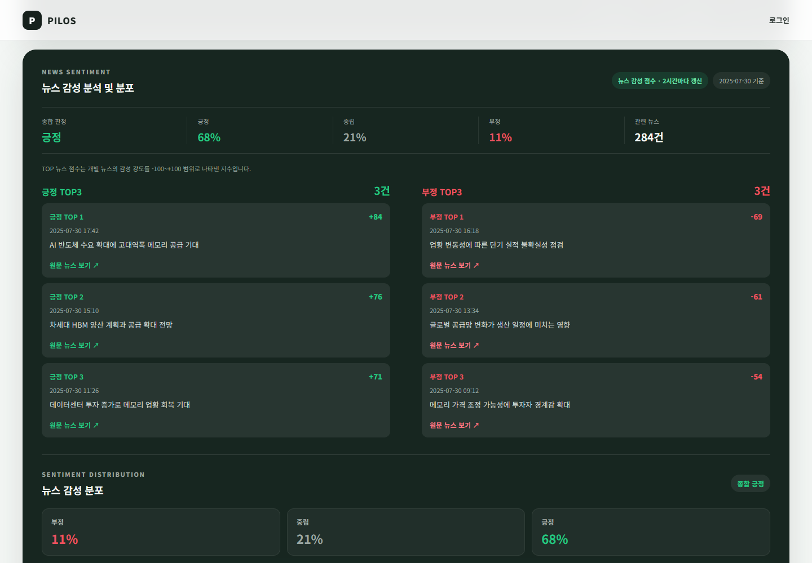

PROJECT DETAIL
PILOS Stock Advisor
뉴스·주가 데이터를 수집하고 뉴스 요약·감성분석·예측 결과를 공용 MySQL에 적재한 뒤 Flask 대시보드로 제공한 4인 팀 프로젝트입니다.
역할 경계
Direction·RecentFlow 예측 모델 자체는 팀원이 구현했습니다. 저는 금융 뉴스 감성분석과 Backend를 직접 구현하고, 팀 모델의 결과를 공용 DB·Jobs pipeline·Flask 서비스에 연결했습니다.
01 / 프로젝트 개요
분리된 뉴스·주가·AI 기능을 공용 DB를 기준으로 하나의 사용자 서비스에 연결했습니다.
프로젝트 질문
수집과 AI 분석을 각각 실행하는 데서 끝내지 않고, 여러 팀원의 기능을 같은 데이터 기준과 실행 순서로 연결해 사용자 화면까지 제공하려면 어떻게 해야 할까?
프로젝트 전체 흐름
20개 테마·100개 종목의 뉴스·주가를 수집하고, 뉴스 요약·유사도 그룹화·KR-FinBERT 감성분석과 Direction·RecentFlow 예측 결과를 공용 MySQL에 저장했습니다. 별도 Flask Web 애플리케이션은 같은 DB를 조회해 대시보드와 종목 상세 화면을 제공합니다.
중요한 구조
AI 저장소와 Web 저장소는 서로 HTTP로 직접 호출하지 않습니다. 공용 MySQL이 두 애플리케이션 사이의 데이터 계약입니다.
서비스 범위
- 종목 가격·등락·거래량 조회
- 테마별 뉴스 감성 차트
- 종목별 감성 추이와 대표 뉴스
- Direction / RecentFlow 결과 표시
- 공식 일일 예측과 과거 재추론 결과 구분
- 회원가입·로그인·관심 종목
경계
교육용 정보 제공 프로젝트이며 실제 투자 추천 서비스가 아닙니다. Direction·RecentFlow의 모델 성능과 운영 pipeline 성공도 서로 다른 검증으로 구분합니다.
02 / 실제 서비스 화면
AI 파이프라인의 결과가 Flask 대시보드와 종목 상세 화면으로 이어졌습니다.
실제 screenshot과 짧은 설명만 사용하고, 정적 재현 화면을 실제 배포 서버 screenshot으로 오해하게 만드는 문구는 사용하지 않습니다.

01 / 서비스 대시보드
테마별 뉴스 감성, 100개 종목의 가격·등락·거래량, 종목 검색과 AI 분석 영역을 한 화면에서 확인합니다.
{kind=link}

02 / 종목·AI 분석
선택한 종목의 시장 데이터와 뉴스 감성, Direction·RecentFlow 결과를 같은 기준일 맥락에서 조회합니다. 예측 모델 자체는 팀 구현이며 이 페이지에서는 서비스 연결 결과로 표시합니다.

03 / 종목 상세
선택한 종목의 실제 주가·거래량과 최근 뉴스 감성 추이를 확인합니다. 뉴스 분석일과 실제 주가 기준일이 다를 수 있어 날짜 의미를 별도로 표시합니다.
{kind=link}

04 / 뉴스 감성 분석
긍정·부정 대표 뉴스와 전체 감성 분포를 같은 종목 상세 흐름에서 확인합니다.
03 / 프로젝트 개념도
AI와 Web은 공용 MySQL을 데이터 계약으로 사용했습니다.
- 뉴스 API / 주가 데이터
- 수집·본문 처리·전처리
- 뉴스 요약 / 유사도 그룹화 / KR-FinBERT 감성
- 팀 모델Features / Direction / RecentFlow
- 공용 MySQL
- Repository
- Service
- Flask Route
- 대시보드 / 종목 상세 / JSON API
AI 저장소와 Web 저장소는 서로 HTTP로 직접 호출하지 않습니다. 공용 MySQL이 두 애플리케이션 사이의 데이터 계약입니다.
실행 상태
- AI Jobs 실행 결과
- pipeline_run
- 최근 갱신 상태 / 공식 DAILY_PREDICTION 상태
- Flask 화면
직접 구현한 KR-FinBERT 감성 DB pipeline, Backend/DB 연결, Jobs/운영 통합 영역은 얇은 강조선으로 표시하고, Direction / RecentFlow는 팀 모델 label과 neutral style로 구분합니다.
04 / 내가 맡은 역할
금융 뉴스 감성분석과 Flask Backend를 구현하고, 팀 기능이 같은 DB와 실행 흐름을 사용하도록 통합했습니다.
1. 금융 뉴스 감성분석 DB pipeline
- KR-FinBERT 기반 감성분석 batch
- 뉴스 제목+요약 입력
- 감성 확률/파생 지표 저장
- 분석 대상 조회와 저장 Repository 분리
news_id + model_id기준 중복 방어
2. 뉴스 처리·재실행 구조 개선
- 뉴스 처리 상태의 기준을 runtime CSV에서 DB로 전환
- 완료/본문만 존재/신규 상태별 재실행 범위 분리
- 테마별 중복 수집 흐름 공통 runner로 정리
3. Flask Backend / DB 연결
- 실제 DB 기반 대시보드·종목 상세 연결
- Repository / Service / Route 책임 분리
- 날짜·예측 상태 서비스 계약
- SQL/조회 성능 개선
4. Jobs와 Linux 실행 통합
- 여러 개별 Job을 전체 실행 흐름으로 연결
- 모델/DB 조건 preflight
- 실행 상태와 예측 상태 기록
- systemd service/timer 구성
5. 사용자 Backend 기능
- 회원가입/로그인 DB 연동
- password hash / session
- 이메일 인증 흐름
- 관심 종목 DB 저장
팀 기능과의 경계
뉴스 요약 모델과 Direction·RecentFlow 예측 모델 자체를 개인 구현으로 표현하지 않습니다. 해당 기능이 요구하는 입력과 결과를 공용 DB·실행 순서·Flask 화면에 맞춰 통합한 범위를 개인 기여로 설명합니다.
팀 모델 Direction / RecentFlow 모델 자체
05 / 데이터·AI를 DB pipeline으로 만드는 과정
개별 분석 코드를 재실행 가능한 DB 작업으로 바꿨습니다.
05-A / KR-FinBERT 감성분석을 재실행 가능한 DB 작업으로
감성분석 batch의 대상 조회와 저장을 DB 계약으로 분리했습니다.
문제
초기 DB 통합 단계에서 감성분석 batch를 다시 실행하거나 여러 실행이 겹치면 같은 뉴스와 같은 모델 조합의 결과가 중복 저장될 수 있었습니다.
구현
- 요약 완료 뉴스를 감성분석 대상으로 조회
news_id + model_id기준 기존 처리 결과를 대상에서 제외- DB unique key와 upsert로 저장 단계에서도 중복 방어
- 대상 조회와 저장 책임을 Repository로 분리
최종 구조로의 변화
프로젝트 후반 스키마가 정리되면서 최종 main에서는 그룹 대표 뉴스의 KR-FinBERT 감성 결과가 summary_analysis에 통합됩니다. 포트폴리오에서는 과거 테이블명을 현재 구조처럼 소개하지 않고, 재실행을 고려해 조회와 DB 제약 양쪽에서 중복을 방어한 설계 경험을 중심으로 설명합니다.
의미
분석 스크립트를 한 번 실행하는 기능에서 끝내지 않고 다시 실행해도 결과 상태를 관리할 수 있는 DB 작업으로 바꾸는 경험이었습니다.
05-B / CSV가 아니라 DB를 처리 상태의 정본으로
runtime 파일과 영속 처리 상태의 책임을 분리했습니다.
문제
runtime CSV가 현재 실행 결과와 과거 처리 이력을 동시에 맡고 있어 파일을 정리하면 DB에 이미 처리된 뉴스까지 다시 크롤링할 수 있었습니다.
변경
stock_code + url_hash 기준으로 DB 상태를 먼저 조회했습니다.
- 본문 + 문장 있음처리 완료, 제외
- 본문만 있음DB 본문 재사용
- 신규 / 본문 없음HTTP 원문 요청
CSV는 현재 실행의 확인·복구 자료로 역할을 줄였습니다.
결과
runtime 파일이 없어도 DB 상태를 기준으로 필요한 단계만 다시 실행할 수 있게 됐습니다.
exactly-once 처리로 과장하지 않습니다. DB 기반 상태와 재실행 중복 방어 경험으로 설명합니다.
06 / Flask Backend와 서비스 데이터 계약
화면마다 필요한 데이터를 Service 단위로 묶고, 날짜와 예측 결과의 의미를 분리했습니다.
06-A / Repository → Service → Route
DB 접근, 화면용 조합, HTTP 요청/응답의 책임을 분리했습니다.
문제
초기 Flask 구현은 route에 SQL 조회·데이터 조합·응답 책임이 집중돼 있었고 일부 화면은 더미 데이터와 반복 조회에 의존했습니다.
변경
- Repository
SQL 조회·저장 - Service
화면/API 사용 사례와 데이터 조합 - Route
요청 파라미터 / 응답
- 주식·뉴스·감성·예측을 실제 DB 기준으로 연결
- 메인/상세에서 공통 AI card service 재사용
- 이후 성능 개선과 날짜 계약을 Service/Repository 단위로 적용
결과
단순히 파일을 나눈 것이 아니라 DB 접근, 화면용 조합, HTTP 요청/응답의 책임을 분리했습니다.
06-B / 뉴스 분석일·주가일·예측 기준일 분리
서로 다른 날짜 의미를 하나의 최신 날짜로 합치지 않았습니다.
문제
화면의 선택 날짜와 주가 거래일, 모델 예측 기준일을 같은 날짜처럼 취급하면 휴장일이나 과거 화면에서 다른 시점의 데이터를 섞어 보여줄 수 있었습니다.
서비스 날짜
- 뉴스 분석일: 뉴스 그룹/감성의 기준일
- 주가 기준일: 선택일 당일 또는 그 이전 실제 주가 적재일
- 예측 기준일: Features와 일일 예측의
base_date - 예측 생성 시각: Direction·RecentFlow가 저장된 실제 시각
정책
- 선택일에 주가가 없으면 이전 실제 거래일을 사용하고 화면에 표시
- 과거 날짜에는 다른 기준일의 최신 예측을 임의 fallback하지 않음
- 브라우저 현재 시각으로 예측 날짜를 다시 계산하지 않음
06-C / 공식 일일 예측과 전체 재추론 결과 분리
AI pipeline의 실행 metadata를 서비스 계약으로 사용했습니다.
문제
pipeline과 연결된 실제 일일 예측과, 과거 전체 데이터를 다시 추론해 DB에 만든 결과를 같은 상태로 보여주면 결과의 출처를 구분할 수 없었습니다.
변경
pipeline_run의DAILY_PREDICTION성공 실행과 결과 연결- 공식 일일 예측과 pipeline 연결 없는 전체 재추론 결과를 별도 상태로 표시
- 마지막 SUCCESS와 현재 RUNNING 상태 구분
- Direction은 RecentFlow와 같은
feature_id를 사용해 동일 예측 체인의 결과를 선택
결과
Web이 자체적으로 결과 의미를 추측하지 않고 AI pipeline이 저장한 실행 metadata를 서비스 계약으로 사용하게 했습니다.
07 / 핵심 문제 해결 경험
1차 프로젝트에서 가장 많이 배운 것은 “어디서 느리고, 무엇을 상태로 믿을 것인가”였습니다.
01 / 조회 목적을 분리해 11.775초 → 0.256초
최신 대표 결과만 필요했지만 최근 90일 summary_analysis 약 17만 행을 정렬하고 있었습니다.
문제
최신 대표 결과만 필요했지만 최근 90일 summary_analysis 약 17만 행을 정렬하고, 단일 종목에만 필요한 데이터도 100종목 목록 조회에 섞여 있었습니다.
원인
- 최근 90일 전체 window sort
- 큰 summary까지 중간 결과에 포함
- 목록/상세 조회 책임 혼재
- 같은 전체 조회 중복 호출
- 한 종목만 필요해도 다수 종목 조회 후 Python 필터링
판단
index를 추가하기 전에 조회 대상과 책임 자체를 줄이는 것이 우선이라고 판단했습니다.
구현
- 최신 분석일을 SQL에서 먼저 제한
- 최신일 데이터만 대표 분석 대상으로 정렬
- 사용하지 않는 큰 필드 제거
- 100종목 목록과 단일 종목 AI 조회 분리
- 필요한 종목을 SQL에서 직접 제한
- 동일 전체 조회 2회 제거
측정/검증
- 대표뉴스 100종목: 5.242s → 0.321s
- 메인
/: 6.447s → 0.588s /api/stockTable: 11.775s → 0.256s
결과
느린 SQL 한 줄을 고친 것이 아니라 화면별 조회 책임을 다시 나누고 SQL 입력 범위를 줄인 경험이었습니다.
02 / runtime 파일과 영속 상태 분리
CSV를 지우면 DB에 완료된 뉴스도 다시 처리될 수 있었습니다.
문제
CSV를 지우면 DB에 완료된 뉴스도 다시 처리될 수 있었습니다.
원인
일회성 runtime 파일이 현재 실행 결과와 과거 처리 이력을 함께 맡고 있었습니다.
판단
일회성 runtime 파일이 아니라 DB를 과거 처리 상태의 source of truth로 사용했습니다.
구현
stock_code + url_hash 기준으로 완료/재사용/신규 상태를 나누고 필요한 단계만 다시 실행했습니다.
측정/검증
DB 상태를 기준으로 재실행 범위를 결정하고 CSV는 확인·복구 자료로만 사용했습니다.
결과
완료/재사용/신규 상태에 따라 필요한 단계만 다시 실행하는 구조로 바뀌었습니다.
03 / 장시간 작업 전에 실패 가능한 조건을 검사
모델 객체나 DB 설정이 빠져 있으면 긴 처리 뒤 예측 단계에서야 실패할 수 있었습니다.
문제
모델 객체나 DB 설정이 빠져 있으면 뉴스 수집·요약을 오래 수행한 뒤 예측 단계에서야 실패할 수 있었습니다.
원인
시작 전에 확인할 수 있는 환경 계약을 장시간 처리 이후에 확인하고 있었습니다.
판단
시작 전에 확인할 수 있는 실패는 비용이 큰 처리 전에 차단해야 했습니다.
구현
모델/DB 조건과 실행 대상을 pipeline 시작 전 검사하는 preflight를 통합했습니다.
측정/검증
- Direction / RecentFlow 모델 객체 존재
- model table 등록
- direction / recentflow unique key
- 실행 대상 설정
결과
장시간 pipeline을 시작하기 전에 환경 계약을 먼저 검증했습니다. 모델 자체는 팀원이 구현했으며 preflight와 실행 통합이 개인 범위입니다.
04 / 서비스가 예측의 출처를 다시 추측하지 않도록 함
최신 DB row를 고르면 과거 재추론 결과가 공식 일일 예측처럼 보일 수 있었습니다.
문제
최신 DB row를 고르면 과거 재추론 결과가 공식 일일 예측처럼 보일 수 있었습니다.
원인
결과 값만 조회하고 어떤 pipeline 실행에서 만들어졌는지 연결하지 않았습니다.
판단
결과의 현재 값보다 실행 출처와 예측 상태를 서비스가 함께 확인해야 했습니다.
구현
pipeline_run과 feature_id를 이용해 실제 DAILY_PREDICTION 결과를 연결하고, pipeline 연결 없는 과거 재추론은 별도 상태로 표시했습니다.
측정/검증
마지막 SUCCESS와 현재 RUNNING 상태, 공식 실행과 전체 재추론 상태를 구분했습니다.
결과
결과 값뿐 아니라 그 값이 어떤 실행에서 만들어졌는지를 서비스가 구분할 수 있게 했습니다.
08 / Jobs와 Linux 운영
개별 스크립트를 Linux에서 반복 실행할 수 있는 하나의 Jobs pipeline으로 묶었습니다.
- 수집
- 뉴스 본문/전처리
- 요약
- 유사도 그룹화
- KR-FinBERT 감성
- DAILY_PREDICTION만 Features → Direction → RecentFlow
LIVE_BRIEFING
- 08 / 10 / 12 / 14 / 16 / 18 / 20 / 22시
- 수집 → DB → 요약 → 그룹화 → 감성
- 예측 모델 미실행
DAILY_PREDICTION
- 23:50
- LIVE_BRIEFING 전체 + Features → Direction → RecentFlow
기준일 계약
실행이 자정을 넘어 완료돼도 하위 단계가 현재 날짜를 다시 계산하지 않고, pipeline 시작 시 정한 데이터 기준일을 전달하도록 했습니다.
pipeline_run
- 실행 slot
- run mode
- 전체 status
- prediction status
- data date
- start/completed time
Web과 같은 실행 상태를 공유했습니다.
systemd
- Linux
systemdoneshot service - timer 기반 정기 실행
- KST 실행 로그와 stage별 소요시간/처리량 기록
검증
- DB·외부 API 비의존 테스트 114개 통과
- 제공된 2026-07-15~16 Linux 통합 실행 로그 7건 모두 최종
PIPELINE SUCCESS - 이 중 DAILY_PREDICTION 실행에서 Direction·RecentFlow 각 100건 저장 기록 존재
pipeline SUCCESS가 모든 개별 뉴스 record의 성공을 뜻하지는 않습니다. 예를 들어 한 로그에서는 요약 대상 6,286건 중 4,654건 성공·1,632건 실패 후 다음 단계까지 완료됐습니다. 레코드 단위 실패/제외 수와 전체 stage 상태를 분리해 해석했습니다.
README가 명시하듯 경로 정리 후 동일 commit으로 새로 생성한 전체 Linux 로그는 검토 자료에 포함되지 않았습니다. 포트폴리오에서는 “제공된 서버 실행 로그 7건”이라고 범위를 정확히 표시합니다.
09 / 결과와 한계
두 저장소를 공용 DB와 실행 상태로 연결했고, 운영 실행과 모델 성능은 따로 봤습니다.
AI / Data
- 20개 테마·100개 종목 뉴스·주가 수집 흐름
- 뉴스 요약·유사도 그룹화·KR-FinBERT 감성 결과 DB 연결
- 감성분석 재실행 중복 방어
- DB 중심 뉴스 처리 상태
- Features / 팀 Direction / 팀 RecentFlow 실행 연결
LIVE_BRIEFING / DAILY_PREDICTION실행 정책pipeline_run실행 이력- Linux/systemd 정기 실행
Web
- 공용 MySQL 조회
- Repository / Service / Route 구조
- 메인 대시보드와 종목 상세
- 뉴스 분석일 / 주가일 / 예측 기준일 구분
- 공식 일일 예측 / 전체 재추론 상태 구분
- 회원가입·로그인·이메일 인증·관심 종목
검증 근거
- AI 저장소 DB/외부 API 비의존 테스트: 114개 통과
- Web 저장소 DB/SMTP 비의존 테스트: 28개 통과
- 실제 DB 읽기 Flask smoke test: 주요 8개 요청 모두 HTTP 200
- 제공된 Linux pipeline 로그: 7건 최종 성공
위 수치는 해당 시점 코드와 제공된 실행 자료의 검증 이력입니다. 테스트 개수 자체를 프로젝트 품질 점수처럼 사용하지 않고, 어떤 계약을 실제로 확인했는지를 함께 설명합니다.
한계
교육 프로젝트 범위와 모델 소유권을 분리해 남겼습니다.
- Direction·RecentFlow 모델 자체는 개인 구현이 아니며 개인 모델 성과로 주장하지 않음
- 모델 예측은 투자 추천이나 수익 보장이 아님
- AI pipeline 실행 성공과 모델 예측 성능은 별개의 검증 항목
- 일부 뉴스는 입력/요약 상태에 따라 record 단위 실패 가능
- DB·외부 API·모델 객체가 없으면 전체 pipeline 재현이 어려움
- 실제 SMTP 발송, CI, WSGI 운영 배포, health check, metric 수집은 최종 저장소 범위에 포함되지 않음
- LLM/RAG 설명과 자동 재학습은 Stock Advisor 범위에 포함되지 않음
10 / 회고
1차 프로젝트에서 기능을 연결해 본 경험이, 2차에서는 계약과 실패 상태를 먼저 보게 만들었습니다.
Stock Advisor에서는 팀원들이 만든 기능을 공용 DB와 Flask 화면에 연결하는 과정에서 조회 책임이 섞이면 성능 문제가 생기고, 실행 중 생성 파일과 DB 중 어느 쪽을 처리 상태의 기준으로 볼지 정해야 하며, 뉴스 분석일·주가일·예측 기준일처럼 비슷해 보이는 값도 의미를 분리해야 한다는 것을 경험했습니다.
여러 Job을 Linux에서 반복 실행하면서는 단순히 스크립트를 순서대로 호출하는 것보다 사전 조건, 실행 기준일, 성공/실패 상태와 재실행 기준이 필요하다는 점도 배웠습니다.
2차 Sentiment Index에서는 이 경험을 더 명시적으로 확장해 model artifact, inference status, active model identity, LLM evidence 계약과 top-level 실패 경계를 설계했습니다. 두 프로젝트를 거치며 관심이 “기능을 만드는 것”에서 데이터와 실행 상태가 끝까지 일관되게 이어지는 Backend 흐름으로 이동했습니다.
이 프로젝트에서 가져간 핵심
- DB를 단순 저장소가 아니라 서비스 간 데이터 계약으로 보는 관점
- 화면별 조회 책임을 분리하는 것의 중요성
- 재실행에서 source of truth와 idempotency가 필요한 이유
- 날짜와 상태는 이름이 비슷해도 서비스 의미를 분리해야 한다는 경험
- 자동화에서 시작 조건과 실패 상태를 정의해야 한다는 경험